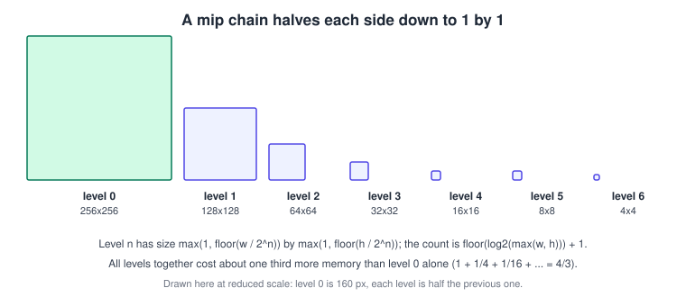
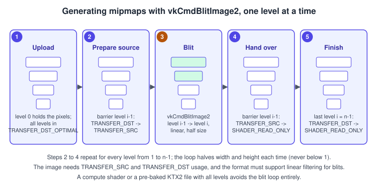

Textures, Samplers and Mipmaps in Vulkan
|
This content was generated with the assistance of AI and should be verified against the official documentation before being relied on in production. |
A texture is not one object in Vulkan. The pixels live in a VkImage with a format, extent, mip levels and array layers; a
VkImageView says which part of that image a shader sees and how its channels are interpreted; a VkSampler holds the filtering
and addressing rules; and a descriptor binds the three together for a draw call. OpenGL fused all of that into one texture object
with sampler state attached, and Metal splits it in two (texture and sampler state). Vulkan goes the whole way: the image, the
view and the sampler are independent, so one sampler can serve a thousand images and one image can be read through several views
and samplers. This page explains each piece, shows how to upload a texture, build its mip chain and sample it, and finishes with
the Bookshelf cover texture.
The facts were checked in November 2026. The version documented is Vulkan 1.4 (headers 1.4.3xx, LunarG SDK 1.4.363.0), with Vulkan 1.3 as the minimum for the running example; where a feature came from a later version it is stated. This is part of the Vulkan Bookshelf example (C++20, Vulkan-Hpp RAII, VMA, GLFW or SDL3 and Slang shaders, with GLSL and HLSL alternatives) and covers the step "KTX2 cover texture" that follows the textured, lit book in Bookshelf 01: From Triangle to Textured Book. The general theory (texel, UV, filtering, anisotropy, mipmap selection) is in Textures, Sampling and Mipmaps; the same topic in other libraries is in OpenGL Textures and Samplers and Metal Textures and Samplers.
The objects behind a texture

| Object | What it holds | Created with |
|---|---|---|
|
Memory-backed pixels: format, extent, |
|
|
A window on the image: view type (1D, 2D, 3D, cube, arrays), format (compatible with the image), component swizzle and a subresource range (base mip level, level count, base layer, layer count, aspect). |
|
|
Filtering, mipmap selection, addressing, anisotropy, LOD clamps, border colour, optional depth comparison. |
|
Descriptor |
A pointer-sized record naming an image view (plus layout) and/or a sampler, in a set layout slot. |
A shader can see these in three combinations. A sampled image (VK_DESCRIPTOR_TYPE_SAMPLED_IMAGE) and a sampler
(VK_DESCRIPTOR_TYPE_SAMPLER) are separate bindings that the shader combines at the sample call, which is the most flexible and
needs the fewest descriptors when many textures share a few samplers. A combined image sampler
(VK_DESCRIPTOR_TYPE_COMBINED_IMAGE_SAMPLER) packs both into one descriptor and is what OpenGL programmers expect; on some
hardware it is a little cheaper to bind. A storage image (VK_DESCRIPTOR_TYPE_STORAGE_IMAGE) is read and written without a
sampler and without filtering, used by compute shaders.
Image creation for a sampled texture
An image that will be sampled and filled by a copy needs at least VK_IMAGE_USAGE_SAMPLED_BIT and
VK_IMAGE_USAGE_TRANSFER_DST_BIT. Add VK_IMAGE_USAGE_TRANSFER_SRC_BIT when mips are generated by blitting (the blit reads the
previous level), and VK_IMAGE_USAGE_STORAGE_BIT when a compute shader generates them. The options that matter:
| Field | Choices and advice |
|---|---|
|
Use an |
|
The full chain has |
|
Always |
|
|
|
|
|
Array textures use several layers; a cube map has six layers and |
Before relying on a format, check what the device allows with vkGetPhysicalDeviceFormatProperties2 and the
optimalTilingFeatures mask: SAMPLED_IMAGE_BIT for sampling, SAMPLED_IMAGE_FILTER_LINEAR_BIT for linear filtering, and
BLIT_SRC_BIT and BLIT_DST_BIT for blit-based mip generation. The mandatory format support in the specification guarantees
these for common formats such as R8G8B8A8_UNORM and R8G8B8A8_SRGB, but not for every compressed or floating-point format.
The sampler in detail
Source: Vulkan specification: Samplers
VkSamplerCreateInfo is where most texture quality is decided. Every field is listed here.
| Field | Meaning | Advice |
|---|---|---|
|
|
|
|
|
Trilinear removes the visible line where one mip level changes to the next. It costs little on modern hardware. |
|
|
Wood textures tile with |
|
Added to the computed level of detail before clamping. |
Negative values sharpen and cause shimmering; positive values blur. Temporal upscalers ask for a negative bias. The device limit |
|
Anisotropic filtering takes several samples along the direction of stretch of the pixel footprint on a surface seen at a grazing angle. |
Requires the |
|
Makes the sampler a comparison sampler: the shader supplies a reference depth and receives the filtered comparison result (percentage-closer filtering for shadow maps). |
Used by the shadow step of the Bookshelf, see Shadows and Global Illumination. |
|
Clamp the level of detail range. |
Set |
|
One of the fixed transparent black, opaque black and opaque white values (float or integer) used by |
Arbitrary border colours need |
|
Coordinates are in texels instead of 0 to 1. |
Heavily restricted: no mipmaps, no anisotropy, |
|
Extension structures: |
Min/max reduction builds hierarchical depth buffers; YCbCr conversion is how video frames are sampled. |
How the level of detail is chosen: the hardware measures how many texels one screen pixel covers, takes the base-2 logarithm of that footprint and adds the bias:
\[ \lambda = \log_2\!\left(\rho\right) + \text{ bias } \]
where \( \rho \) is the larger of the footprint’s side lengths in texels (or, with anisotropy, the shorter side after the sample count
is accounted for). The result is clamped to [minLod, maxLod] and to the levels present in the image view. NEAREST mipmap mode
rounds it; LINEAR blends levels \( \lfloor \lambda \rfloor \) and \( \lfloor \lambda \rfloor + 1 \).
Creating the Bookshelf samplers
#include <vulkan/vulkan_raii.hpp>
#include <algorithm>
// Create the two samplers used by the Bookshelf: wood and covers tile or clamp.
struct Samplers {
vk::raii::Sampler repeat; // shelf wood
vk::raii::Sampler clamp; // book covers, spines, pages
};
Samplers makeSamplers(const vk::raii::PhysicalDevice& gpu,
const vk::raii::Device& device,
float requestedAnisotropy = 16.0f)
{
const auto limits = gpu.getProperties().limits;
// Only valid when the samplerAnisotropy feature was enabled at device creation.
const float aniso = std::min(requestedAnisotropy, limits.maxSamplerAnisotropy);
vk::SamplerCreateInfo info{
.magFilter = vk::Filter::eLinear,
.minFilter = vk::Filter::eLinear,
.mipmapMode = vk::SamplerMipmapMode::eLinear,
.addressModeU = vk::SamplerAddressMode::eRepeat,
.addressModeV = vk::SamplerAddressMode::eRepeat,
.addressModeW = vk::SamplerAddressMode::eRepeat,
.mipLodBias = 0.0f,
.anisotropyEnable = vk::True,
.maxAnisotropy = aniso,
.compareEnable = vk::False,
.minLod = 0.0f,
.maxLod = vk::LodClampNone,
.borderColor = vk::BorderColor::eFloatOpaqueBlack,
.unnormalizedCoordinates = vk::False,
};
vk::raii::Sampler repeat{device, info};
info.addressModeU = info.addressModeV = info.addressModeW = vk::SamplerAddressMode::eClampToEdge;
vk::raii::Sampler clamp{device, info};
return Samplers{std::move(repeat), std::move(clamp)};
}The designated initialisers need C++20 and the VULKAN_HPP_NO_STRUCT_CONSTRUCTORS macro defined before including Vulkan-Hpp (the structs are otherwise built with constructors). vk::LodClampNone is the C++ name of VK_LOD_CLAMP_NONE.
Mipmaps
A mipmap chain is a pre-filtered set of smaller copies of the texture. Without it a minified texture is sampled at widely spaced texels, which shimmers when the camera moves (aliasing) and wastes memory bandwidth because neighbouring pixels touch distant memory. With it the GPU reads from the level whose texels are about one pixel in size, so the access is local and the result is stable. The chain costs about one third extra memory.
Vulkan does not generate mip levels for you. There are three ways to fill them, from best to worst:
-
Pre-baked in the file. A KTX2 file can carry every level, computed offline with a high-quality filter (for example a Kaiser or Lanczos kernel, and in linear space for colour textures). Uploading is then a plain copy per level. This is the right answer for shipped assets.
-
Compute shader generation. A compute pass writes level \( i \) from level \( i-1 \), with a custom reduction (min, max or alpha-aware). Needs
STORAGEusage and a format that supports storage images. -
Blit generation at load time.
vkCmdBlitImage2(core in Vulkan 1.3, previouslyvkCmdBlitImage) filters each level from the previous one with a box or linear filter. Simple, good enough for development and for procedurally created textures, and used below.

The sequence works level by level because each blit reads the level just written. One layout transition per subresource range
(level) is needed; this is the part of the procedure that goes wrong most often. After each blit the source level is final and moves
to SHADER_READ_ONLY_OPTIMAL; the last level was only ever a blit destination, so it is transitioned separately after the loop.
Complete example: upload and mip generation
The helper below creates the image with VMA, copies pixels from a staging buffer into level 0 and fills the remaining levels with blits, using synchronization2 barriers (see Synchronization and Synchronization2). It is called with a command buffer that is already recording; the caller submits it and keeps the staging buffer alive until the work has finished.
#include <vulkan/vulkan_raii.hpp>
#include <vk_mem_alloc.h>
#include <algorithm>
#include <bit>
#include <cmath>
#include <cstdint>
struct Texture {
VkImage image = VK_NULL_HANDLE;
VmaAllocation allocation = nullptr;
vk::raii::ImageView view{nullptr};
std::uint32_t mipLevels = 1;
};
static std::uint32_t mipCount(std::uint32_t w, std::uint32_t h)
{
return std::bit_width(std::max(w, h)); // floor(log2(max)) + 1
}
// Barrier for one mip range (sync2).
static void transition(vk::CommandBuffer cmd, vk::Image image, std::uint32_t baseMip, std::uint32_t levels,
vk::ImageLayout oldL, vk::ImageLayout newL,
vk::PipelineStageFlags2 srcStage, vk::AccessFlags2 srcAccess,
vk::PipelineStageFlags2 dstStage, vk::AccessFlags2 dstAccess)
{
vk::ImageMemoryBarrier2 b{
.srcStageMask = srcStage, .srcAccessMask = srcAccess,
.dstStageMask = dstStage, .dstAccessMask = dstAccess,
.oldLayout = oldL, .newLayout = newL,
.srcQueueFamilyIndex = vk::QueueFamilyIgnored,
.dstQueueFamilyIndex = vk::QueueFamilyIgnored,
.image = image,
.subresourceRange = {vk::ImageAspectFlagBits::eColor, baseMip, levels, 0, 1}};
cmd.pipelineBarrier2(vk::DependencyInfo{.imageMemoryBarrierCount = 1, .pImageMemoryBarriers = &b});
}
Texture createTexture2D(VmaAllocator vma, const vk::raii::Device& device, vk::CommandBuffer cmd,
vk::Buffer staging, std::uint32_t width, std::uint32_t height, vk::Format format)
{
Texture tex;
tex.mipLevels = mipCount(width, height);
vk::ImageCreateInfo ici{
.imageType = vk::ImageType::e2D,
.format = format, // e.g. eR8G8B8A8Srgb
.extent = {width, height, 1},
.mipLevels = tex.mipLevels,
.arrayLayers = 1,
.samples = vk::SampleCountFlagBits::e1,
.tiling = vk::ImageTiling::eOptimal,
.usage = vk::ImageUsageFlagBits::eSampled | vk::ImageUsageFlagBits::eTransferDst |
vk::ImageUsageFlagBits::eTransferSrc, // src: blits read the previous level
.sharingMode = vk::SharingMode::eExclusive,
.initialLayout = vk::ImageLayout::eUndefined};
VmaAllocationCreateInfo aci{.usage = VMA_MEMORY_USAGE_AUTO};
VkImage raw;
vmaCreateImage(vma, reinterpret_cast<const VkImageCreateInfo*>(&ici), &aci, &raw, &tex.allocation, nullptr);
tex.image = raw;
vk::Image image{raw};
tex.view = vk::raii::ImageView{device, vk::ImageViewCreateInfo{
.image = image, .viewType = vk::ImageViewType::e2D, .format = format,
.subresourceRange = {vk::ImageAspectFlagBits::eColor, 0, tex.mipLevels, 0, 1}}};
using S = vk::PipelineStageFlagBits2;
using A = vk::AccessFlagBits2;
using L = vk::ImageLayout;
// 1. All levels: UNDEFINED -> TRANSFER_DST, then copy staging buffer into level 0.
transition(cmd, image, 0, tex.mipLevels, L::eUndefined, L::eTransferDstOptimal,
S::eTopOfPipe, {}, S::eAllTransfer, A::eTransferWrite);
vk::BufferImageCopy2 region{
.imageSubresource = {vk::ImageAspectFlagBits::eColor, 0, 0, 1},
.imageExtent = {width, height, 1}};
cmd.copyBufferToImage2(vk::CopyBufferToImageInfo2{
.srcBuffer = staging, .dstImage = image, .dstImageLayout = L::eTransferDstOptimal,
.regionCount = 1, .pRegions = ®ion});
// 2. For each level i >= 1: previous level -> TRANSFER_SRC, blit, previous level -> SHADER_READ_ONLY.
std::int32_t w = static_cast<std::int32_t>(width), h = static_cast<std::int32_t>(height);
for (std::uint32_t i = 1; i < tex.mipLevels; ++i) {
transition(cmd, image, i - 1, 1, L::eTransferDstOptimal, L::eTransferSrcOptimal,
S::eAllTransfer, A::eTransferWrite, S::eAllTransfer, A::eTransferRead);
const std::int32_t nw = std::max(w / 2, 1), nh = std::max(h / 2, 1);
vk::ImageBlit2 blit{
.srcSubresource = {vk::ImageAspectFlagBits::eColor, i - 1, 0, 1},
.srcOffsets = {{vk::Offset3D{0, 0, 0}, vk::Offset3D{w, h, 1}}},
.dstSubresource = {vk::ImageAspectFlagBits::eColor, i, 0, 1},
.dstOffsets = {{vk::Offset3D{0, 0, 0}, vk::Offset3D{nw, nh, 1}}}};
cmd.blitImage2(vk::BlitImageInfo2{
.srcImage = image, .srcImageLayout = L::eTransferSrcOptimal,
.dstImage = image, .dstImageLayout = L::eTransferDstOptimal,
.regionCount = 1, .pRegions = &blit, .filter = vk::Filter::eLinear});
transition(cmd, image, i - 1, 1, L::eTransferSrcOptimal, L::eShaderReadOnlyOptimal,
S::eAllTransfer, A::eTransferRead, S::eFragmentShader, A::eShaderSampledRead);
w = nw; h = nh;
}
// 3. The last level was only a destination.
transition(cmd, image, tex.mipLevels - 1, 1, L::eTransferDstOptimal, L::eShaderReadOnlyOptimal,
S::eAllTransfer, A::eTransferWrite, S::eFragmentShader, A::eShaderSampledRead);
return tex;
}Source: Khronos Vulkan Tutorial (mipmaps chapter) and Vulkan reference: vkCmdBlitImage2
Points worth knowing about this code:
-
A blit does not require the same format on both sides but both formats must be supported as
BLIT_SRCandBLIT_DST; because source and destination are the same image they trivially match. IfSAMPLED_IMAGE_FILTER_LINEAR_BITis missing fromoptimalTilingFeatures, aFilter::eLinearblit is invalid and you must use a compute pass or pre-baked levels. -
Check that the format supports blits at all; mandatory format support covers the common colour formats, not every one.
-
Making every level
SHADER_READ_ONLY_OPTIMALbefore the first draw is mandatory when the descriptor says that layout. Tracking per-level layouts is the reason many engines keep a small state table per texture. -
The staging buffer, the barriers and the copy belong to the same one-time submission; see Queues and Command Buffers for recording a one-time command buffer and Memory Heaps, Types and VMA for staging buffers.
Uploading: staging buffer, transfer queue or host image copy
The classic upload is the one shown: create a host-visible staging buffer, write the pixels, copy to the optimal-tiling image on the GPU. It works everywhere and the copy can run on a dedicated transfer queue so the graphics queue is not stalled; in that case a queue family ownership transfer is needed (see Synchronization and Synchronization2).
Vulkan 1.4 promoted host image copy (from VK_EXT_host_image_copy) to core. With the hostImageCopy feature and an image created
with VK_IMAGE_USAGE_HOST_TRANSFER_BIT, the CPU can copy memory into the image directly with vkCopyMemoryToImage, change layouts
with vkTransitionImageLayout (no command buffer, no queue) and read the image back with vkCopyImageToMemory. This removes the
staging buffer, the command buffer and the barrier for simple uploads, which is attractive for streaming. Use
vkGetPhysicalDeviceFormatProperties2 to check the format supports HOST_IMAGE_TRANSFER, and the
VkPhysicalDeviceHostImageCopyProperties structure to see which layouts the implementation accepts for host copies. Drivers may
detile on the CPU, so a large upload is not necessarily faster than a GPU copy; measure on the target hardware. The Bookshelf keeps
the staging path as the default because it runs on Vulkan 1.3 devices.
Compressed textures, KTX2 and Basis Universal
Uncompressed RGBA8 costs four bytes per texel. GPU block-compressed formats store fixed-size blocks and are decoded by the texture unit while sampling, so they reduce memory and bandwidth by 4x to 8x or more. The families differ by platform:
| Family | Formats | Typical hardware | Device feature |
|---|---|---|---|
BC (S3TC, RGTC, BPTC) |
BC1 to BC7; BC7 for high-quality colour, BC5 for two-channel normal maps, BC6H for HDR. |
Desktop GPUs, many consoles. |
|
ETC2 and EAC |
ETC2 RGB(A), EAC one- and two-channel. |
Mobile GPUs and some desktop GPUs. |
|
ASTC LDR |
Block sizes from 4x4 to 12x12; the block size trades quality for bits per pixel. |
Mobile and Apple-silicon GPUs; some desktop GPUs do not support it. |
|
No format is universal across desktop and mobile, so a shipped game either stores several encodings or uses a supercompressed
container. KTX 2.0 (.ktx2) is the Khronos container for GPU textures: it stores the Vulkan format, all mip levels (smallest
first), array layers and faces, and an optional supercompression scheme. With Basis Universal (ETC1S or UASTC) the file holds
an intermediate texture that a fast transcoder converts at load time to whichever block-compressed format the device supports. The
Khronos KTX-Software library (libktx) provides the loader, transcoder and a Vulkan upload helper, and the command-line tools
(ktx create, toktx) produce the files. A glTF asset can reference KTX2 images through KHR_texture_basisu.
The workflow in the Bookshelf is therefore:
-
Author the PNG textures of
bookshelf.glb(the model and the PNG textures are on the site, see bookshelf.glb). -
Produce KTX2 versions with mipmaps and Basis Universal compression using
toktxorktx create(the tools are installed with the KTX-Software package; they are not part of the Vulkan SDK). -
At run time load the file with
libktx, choose the transcode target from the device features (BC7 wheretextureCompressionBCis set, ASTC 4x4 wheretextureCompressionASTC_LDRis set, ETC2 otherwise), create the image from the chosen format and copy each level from the staging buffer.
#include <ktx.h>
#include <ktxvulkan.h>
// Choose the transcode target for a Basis Universal KTX2 texture.
static ktx_transcode_fmt_e pickTranscodeTarget(const vk::PhysicalDeviceFeatures& f)
{
if (f.textureCompressionBC) return KTX_TTF_BC7_RGBA;
if (f.textureCompressionASTC_LDR) return KTX_TTF_ASTC_4x4_RGBA;
if (f.textureCompressionETC2) return KTX_TTF_ETC2_RGBA;
return KTX_TTF_RGBA32; // uncompressed fallback
}
ktxTexture2* loadKtx2(const char* path, const vk::PhysicalDeviceFeatures& features)
{
ktxTexture2* tex = nullptr;
if (ktxTexture2_CreateFromNamedFile(path, KTX_TEXTURE_CREATE_LOAD_IMAGE_DATA_BIT, &tex) != KTX_SUCCESS)
return nullptr;
if (ktxTexture2_NeedsTranscoding(tex)) {
if (ktxTexture2_TranscodeBasis(tex, pickTranscodeTarget(features), 0) != KTX_SUCCESS) {
ktxTexture_Destroy(ktxTexture(tex));
return nullptr;
}
}
// tex->vkFormat now names the Vulkan format; tex->numLevels levels are in tex->pData.
// Create the VkImage with that format and numLevels, then record one
// vkCmdCopyBufferToImage2 region per level, using ktxTexture_GetImageOffset for offsets.
return tex;
}The library also offers ktxTexture2_VkUploadEx, which creates the image, copies all levels and (optionally) transitions it in one
call using a ktxVulkanDeviceInfo you fill in once. It is convenient but allocates with plain vkAllocateMemory; to put the image
in a VMA allocation use the manual path above. KTX2 stores colour data as _SRGB or _UNORM formats according to the file’s
transfer function, so the Vulkan format returned already carries the colour-space choice.
Using the texture in a shader
The Bookshelf shader declares one sampler and several textures (cover, spine, pages, wood). Bindings are described in Descriptors and Push Constants; the many-textures case moves to Bindless Descriptor Indexing, Buffer Addresses and Descriptor Heaps.
// bookshelf_textured.slang
struct VSOut {
float4 position : SV_Position;
float2 uv : TEXCOORD0;
};
[[vk::binding(0, 0)]] Texture2D<float4> coverTexture;
[[vk::binding(1, 0)]] SamplerState linearClamp;
[shader("fragment")]
float4 fragmentMain(VSOut input) : SV_Target
{
// SampleLevel / SampleBias / SampleGrad exist for non-uniform control flow.
return coverTexture.Sample(linearClamp, input.uv);
}The same fragment shader in GLSL, with a combined image sampler:
#version 450
layout(set = 0, binding = 0) uniform sampler2D coverTexture;
layout(location = 0) in vec2 uv;
layout(location = 0) out vec4 outColor;
void main() {
outColor = texture(coverTexture, uv);
}Source: Vulkan Guide: Descriptor arrays and Slang documentation
In HLSL compiled with DXC for SPIR-V the declaration is [[vk::binding(0, 0)]] Texture2D<float4> coverTexture; plus a
SamplerState, exactly as in the Slang listing. Implicit-derivative sampling (Sample, texture) must run in uniform control
flow; inside non-uniform branches, or in vertex and compute shaders, use an explicit level (SampleLevel, textureLod) or
gradients (SampleGrad, textureGrad).
Binding the descriptors on the CPU
// Layout: binding 0 = sampled image, binding 1 = sampler (both fragment-visible).
std::array bindings{
vk::DescriptorSetLayoutBinding{0, vk::DescriptorType::eSampledImage, 1, vk::ShaderStageFlagBits::eFragment},
vk::DescriptorSetLayoutBinding{1, vk::DescriptorType::eSampler, 1, vk::ShaderStageFlagBits::eFragment}};
vk::raii::DescriptorSetLayout layout{device, vk::DescriptorSetLayoutCreateInfo{
.bindingCount = static_cast<std::uint32_t>(bindings.size()), .pBindings = bindings.data()}};
// After allocating `set` from a pool:
vk::DescriptorImageInfo imageInfo{nullptr, *texture.view, vk::ImageLayout::eShaderReadOnlyOptimal};
vk::DescriptorImageInfo samplerInfo{*samplers.clamp, nullptr, vk::ImageLayout::eUndefined};
std::array writes{
vk::WriteDescriptorSet{.dstSet = *set, .dstBinding = 0, .descriptorCount = 1,
.descriptorType = vk::DescriptorType::eSampledImage, .pImageInfo = &imageInfo},
vk::WriteDescriptorSet{.dstSet = *set, .dstBinding = 1, .descriptorCount = 1,
.descriptorType = vk::DescriptorType::eSampler, .pImageInfo = &samplerInfo}};
device.updateDescriptorSets(writes, {});Note that the layout in the descriptor must match the layout the image is in when the draw executes. A mismatch is a validation error (see Validation and Debug Utils) and undefined results on some GPUs, even if the picture seems right on the development machine.
Common mistakes
| Symptom | Cause | Fix |
|---|---|---|
Texture looks blurry or never gets sharper or smaller |
|
Set |
Distant surfaces shimmer |
No mipmaps, or |
Generate the chain and use |
Texture too dark or washed out |
Colour data loaded as |
Pick the format by content type; see the colour page |
Validation error about anisotropy |
|
Enable the feature and clamp the value |
Black or garbage texture on the first frame |
Layout still |
Add the final transition with |
Colour bleeding at the edge of a cover |
|
Use |
|
The number of live samplers hit |
Share samplers; create a handful at start-up and reuse them |
Performance notes
-
Always use mipmaps for textures that can be minified; they speed up rendering as well as improve quality.
-
Block-compressed textures cut bandwidth. On tile-based mobile GPUs bandwidth is the main cost, which makes ASTC or ETC2 close to mandatory there (see Multithreading and Performance).
-
Anisotropy has a cost only where the surface is oblique; a global 8x or 16x setting is usually affordable on desktop and worth a quality option on mobile.
-
Use a small set of shared samplers; do not create one per texture.
-
Prefer one pipeline barrier that covers a range of levels over many single-level barriers when the transitions happen together. The blit loop needs per-level barriers by design; pre-baked mips avoid them.
-
A texture atlas or an array texture reduces descriptor changes; bindless indexing removes them.
-
Upload through a transfer queue or host image copy for streaming so the graphics queue keeps working.
Where older guides are outdated
| Older guide statement | Today |
|---|---|
Images are transitioned with |
Use |
Copies use |
|
Textures are loaded from PNG or JPEG decoded on the CPU and stored uncompressed (VCB ch. 10) |
Ship KTX2 with Basis Universal or pre-selected BC, ASTC or ETC2, with mipmaps already in the file |
Combined image samplers are the only texture binding that is shown |
Separate sampled-image and sampler descriptors, and bindless arrays of images (descriptor indexing, core in 1.2) |
Mipmaps are mentioned briefly or as a nice-to-have |
Mip levels are the default for every minifiable texture; set |
See it in
The general concept is in Textures, Sampling and Mipmaps. The same ideas in other libraries: OpenGL, Metal. For C++ build and tooling see C++ build and tooling, and for the Vulkan-Hpp conventions see Vulkan-Hpp, RAII and C++ Bindings.
References
-
Vulkan specification, samplers: https://docs.vulkan.org/spec/latest/chapters/samplers.html
-
Vulkan specification, image views and formats: https://docs.vulkan.org/spec/latest/chapters/resources.html and https://docs.vulkan.org/spec/latest/chapters/formats.html
-
Reference pages: https://registry.khronos.org/vulkan/specs/latest/man/html/VkSamplerCreateInfo.html, https://registry.khronos.org/vulkan/specs/latest/man/html/vkCmdBlitImage2.html, https://registry.khronos.org/vulkan/specs/latest/man/html/VkDescriptorImageInfo.html
-
Vulkan versions appendix: https://docs.vulkan.org/spec/latest/appendices/versions.html
-
Khronos Vulkan Tutorial: https://docs.vulkan.org/tutorial/latest/00_Introduction.html
-
Vulkan Guide: https://docs.vulkan.org/guide/latest/index.html
-
Host image copy proposal: https://docs.vulkan.org/features/latest/features/proposals/VK_EXT_host_image_copy.html
-
KTX-Software (libktx, ktx and toktx): https://github.com/KhronosGroup/KTX-Software and the KTX 2.0 specification at https://registry.khronos.org/KTX/
-
Slang: https://shader-slang.org
-
Vulkan Memory Allocator: https://gpuopen.com/vulkan-memory-allocator/
-
Vulkan Programming Guide (publisher page): https://www.informit.com/store/vulkan-programming-guide-the-official-guide-to-learning-9780134464541
-
Vulkan Cookbook (publisher page): https://www.packtpub.com/en-us/product/vulkan-cookbook-9781786468154